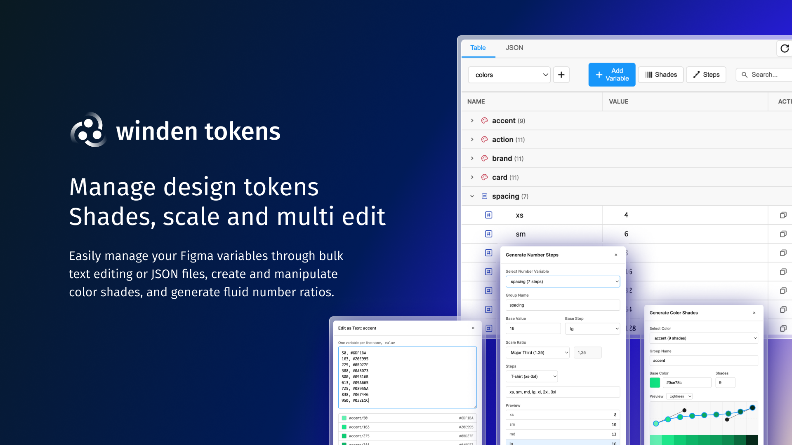

The only Figma plugin with spreadsheet editing, automated palette generation, visual relationship graphs, and WCAG contrast checking—all in one place.

Generate 50-950 shade palettes and entire spacing scales in seconds, not hours
WCAG 2.1 contrast checking with AA/AAA badges for every color pair
Interactive node graphs show token dependencies and aliases at a glance
Six specialized views
Everything you need to manage design tokens at scale
Spreadsheet-style editing with inline controls, collection switching, and instant search
Generate 50-950 color palettes with advanced Bezier curve controls
Create spacing/sizing scales with Golden Ratio, Major Third, and more
Interactive graphs for colors and numbers showing all token relationships
WCAG 2.1 compliance with real-time AA/AAA badges
CSV and JSON editors for importing/exporting entire token sets
Latest Videos
Step-by-step guides to master every feature
Latest Updates
Recent improvements and new features
vs Native Figma Variables
Figma provides the foundation. Winden Tokens adds the workflows.
| Feature | Winden Tokens | Native Figma |
|---|---|---|
| Spreadsheet-style editing | Yes | Limited |
| Move variables between collections | Dropdown | Manual copy/paste |
| Auto-generate 50-950 color palettes | Bezier curves | No |
| Number scale generator (Golden Ratio, etc.) | 8 presets | No |
| Visual node graphs for relationships | Colors + Numbers | No |
| WCAG contrast checking | AA/AAA badges | No |
| CSV/JSON batch editing | Both | No |
| Auto-sync with native variables (2s) | Yes | N/A |
| Multi-mode support (Light/Dark) | Yes | Yes |
| Group operations (move, edit, contrast) | Yes | Manual only |
| All variable types (Color, Number, String, Boolean) | All 4 | All 4 |
Free, open source, and used by designers at top companies.
News, features, and changelog